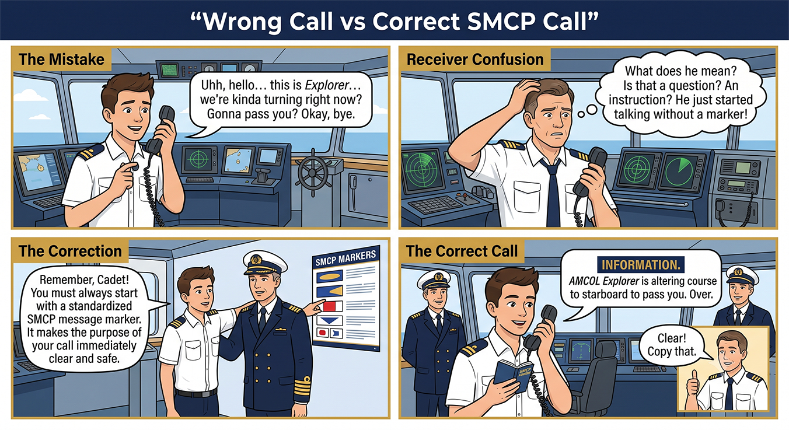

Conversation & Audio
Visual scenario, model exchange, and listening practice. Work through this page, then use the Next Page button to continue.
Wrong Call vs Correct SMCP Call
{kind=link}

Sample Conversation: Port Approach with All 8 Markers
Audio Practice: Unit 1 Sample Conversation
Listen to the complete model conversation first. Then repeat each message and practise the eight SMCP markers with clear pauses.
Conversation Script
Vessel: Rayong VTS, Rayong VTS, this is Motor Vessel Pacific Trader, Pacific Trader. Call sign Papa-Tango-Five-Seven. Over.
VTS: Pacific Trader, this is Rayong VTS. Send your message. Over.
Vessel: Information. I am approaching Pilot Boarding Ground Alpha. My present course is one-eight-five degrees. My speed is one-two knots. Over.
VTS: Question. What is your maximum draught and ETA at the pilot station? Over.
Vessel: Answer. My maximum draught is eight decimal two metres. My ETA at the pilot station is one-four-three-zero local time. Over.
VTS: Warning. Dense outbound traffic is reported near Buoy Romeo-Two. Fishing vessels are crossing the fairway. Over.
VTS: Advice. You should reduce speed and keep to the starboard side of the fairway. Over.
Vessel: Intention. I will reduce speed to eight knots and keep to the starboard side of the fairway. Over.
Vessel: Request. I require one pilot and two tugs for berthing at Terminal Bravo. Over.
VTS: Instruction. Proceed to Pilot Boarding Ground Alpha. Maintain listening watch on channel one-two. Report when pilot is on board. Over.
Vessel: Answer. Proceeding to Pilot Boarding Ground Alpha, maintaining listening watch on channel one-two, and reporting when pilot is on board. Pacific Trader, out.
Conversation analysis
The sample conversation includes all eight markers in one port approach situation. Students should identify each marker and explain why it was used. This reinforces the link between marker, grammar pattern, and operational purpose.
Listening and Pronunciation Drill: All-Marker Recognition Drill
Student task: Listen as your teacher or partner reads the script twice. On the first listening, identify the main situation. On the second listening, write the key information: station name, vessel name, marker used, position/course/time, and action required.
Information. I am approaching Pilot Boarding Ground Alpha.
Question. What is your maximum draught?
Warning. Dense outbound traffic is reported near Buoy Romeo-Two.
Advice. You should reduce speed and keep to starboard side of the fairway.
Request. I require one pilot and two tugs.
Intention. I will reduce speed to eight knots.
Instruction. Maintain listening watch on channel one-two.
Answer. Maintaining listening watch on channel one-two.
Pronunciation Focus
- Instruction: order. Advice: recommendation. Warning: danger.
- Question and Answer must match directly.
- Request asks for help or service; Intention states planned action.